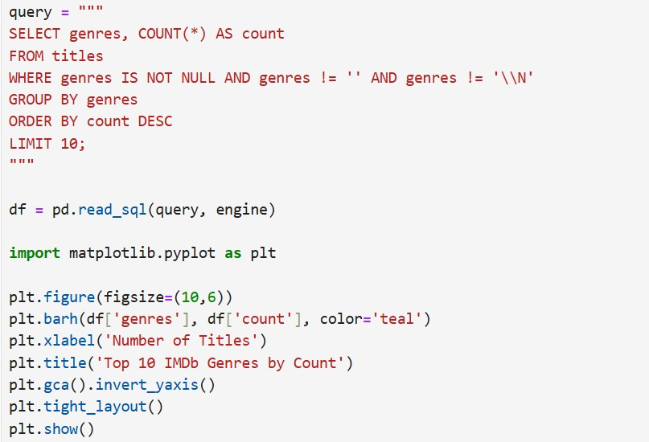
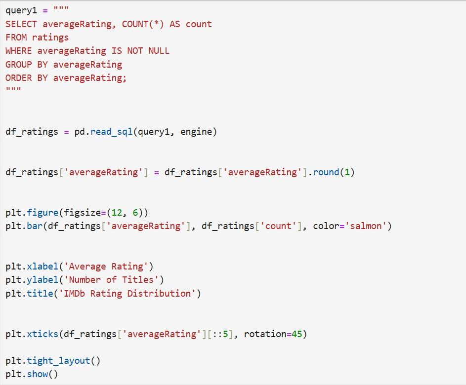
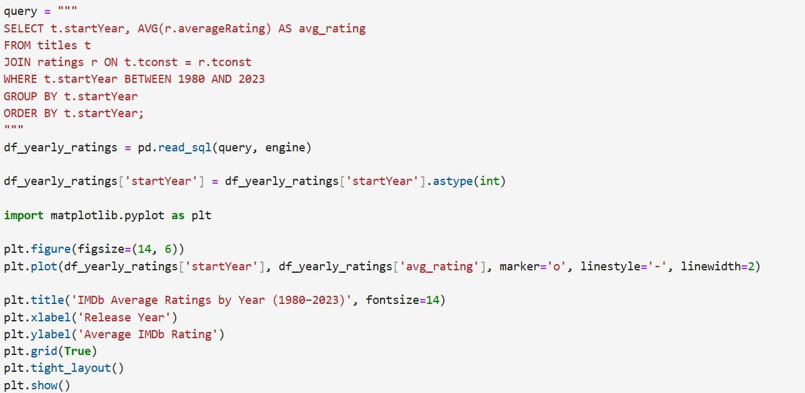
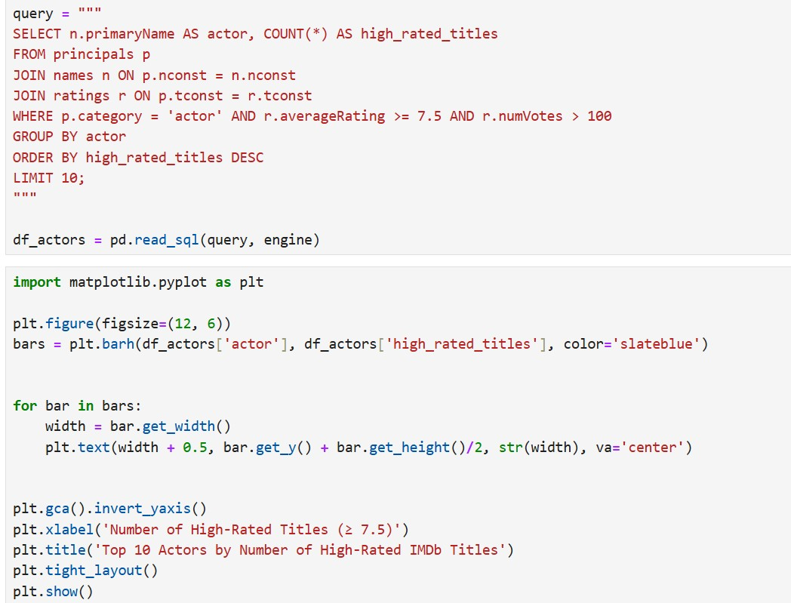

Introduction
This project explores IMDb movie ratings using data from Kaggle. Python was used for cleaning and charts, and SQL was used to run queries on the data. The goal is to find trends in movie ratings, genres, and top actors or directors.
Objective
- Organize and clean IMDb movie data using Python and SQL tools.
- Discover which 10 genres have the most titles listed on IMDb.
- Show how movie ratings are spread out across all IMDb titles.
- Track how average movie ratings have changed over the years.
- Highlight the top 10 actors who appear most often in highly rated films.
Methodology
-
Data Collection
The IMDb dataset was sourced from Kaggle and includes five main .tsv files:
title.basics.tsv — movie titles, release years, and genres.
title.ratings.tsv — IMDb user ratings and vote counts.
name.basics.tsv — actors, directors, and crew information.
title.akas.tsv — alternate titles and region-specific names.
title.principals.tsv — connects titles to main cast and crew.These files were imported into Python using Pandas with
read_csv(), specifying tab separators and replacing missing values (\N) with None for consistency. -
Data Loading and Transformation
The raw .tsv files were read and combined as needed using Python and SQL.
-
Data Cleaning
IMDB Dataset:
- Removed extra spaces.
- Checked for the missing data.
- Dropped rows with essential missing values and filled some of missing values.
- Checked for the data conversion.
- Saved the cleaned data.
-
Data Loaded to MySQL
Loaded the cleaned DataFrames into a MySQL database using SQLAlchemy with to_sql().
-
Query writing
Queries were written in Python with MySQL connection for further analysis.
-
Data Visualization
Each analysis is represented with line charts, bar charts using Python and relevant insights are delivered from each.
-
Analysis
Descriptive Analysis:
The query and chart help us understand which movie genres are the most common in the IMDb dataset. By counting how many titles belong to each genre and showing the top 10, we get a clear picture of which genres appear most often. For example, genres like Drama or Comedy may be at the top, meaning there are more movies or shows in these categories compared to others. This gives us a basic idea of what types of content are most frequently produced or listed in the database.

Exploratoty Analysis:
The query and chart show how IMDb ratings are distributed across all titles in the dataset. It groups the titles by their average rating (like 5.0, 6.5, etc.) and counts how many titles have each specific rating. The bar chart then visually displays this distribution.
From this, we can easily see which ratings are most common—for example, many titles might cluster around 6.0 to 7.5, suggesting that most IMDb-rated content falls in the "average to good" range. Ratings at the extremes (like below 3 or above 9) usually have fewer titles, indicating that very low-rated or very high-rated content is relatively rare. This insight helps us understand general audience perception and quality trends in the dataset.

Trend Analysis:
This query looks at how IMDb ratings have changed each year from 1980 to 2023. It finds the average rating for all movies and shows released in each year. The graph shows if people liked content more or less in certain years. Any big rise or drop in ratings could mean changes in what people enjoy or how movies were made. This helps movie makers and researchers understand trends over time.

Performance Analysis:
This query lists the top 10 actors who acted in the most high-rated titles (rating ≥ 7.5). It filters out less popular titles by considering only those with over 100 votes. The result shows which actors consistently work in well-received movies or shows. It helps identify reliable and successful performers based on audience ratings. This insight can be useful for casting decisions, fan analysis, or trend research.

Results
- Data has been loaded successfully.
- Data cleaning process is done to ensure quality and integrity of dataset by renaming, removing, reordering and merging datasets.
- Queries were written for further analysis using SQL.
- Charts were created for visualisation using Python and results were generated.
- Descriptive Analysis:
- Drama is the most common genre by a large margin.
- Next are combinations like Drama, Romance and Documentary.Comedy is also very common. Short films, News, Adult, and Talk-Show formats are also frequent.
- Most IMDb titles fall into Drama, Romance, Documentary, and Comedy, showing these genres dominate film and TV production.
- Exploratoty Analysis:
- Most ratings cluster between 6.0 and 7.5.
- The peak is around 7.0–7.5, meaning most movies/shows have average to good ratings. Very few titles are rated below 3.0 or above 9.0.
- IMDb titles mostly get average to good audience scores — extreme ratings (very low or very high) are rare.
- Trend Analysis:
- There is a general upward trend: average ratings rose from about 6.5 in 1980 to around 7.0+ in recent years.
- There are some fluctuations, but overall audience scores have slowly increased over time.
- This suggests that either content quality is improving, audience standards have shifted, or there are trends in how people rate movies and shows over time.
- Performance Analysis:
- Dee Bradley Baker is at the top by far, with over 2,500 high-rated titles.
- Others include Tom Kenny, John DiMaggio, and Steve Blum, all well-known for extensive voice acting in high-rated shows and films.
- Most names on this list are prolific voice actors in animation, which explains the high counts.These actors consistently appear in high-rated productions, highlighting them as reliable performers for popular and well-received content.
Summary
- Tools Python & MySQL
- Objective To analyze IMDb movie and TV show data to understand genre trends, ratings distribution, rating trends over time, and top actors based on audience scores.
- Data Stages Data Collection Data Loading and Transformation Data Cleaning Query Writing(SQL) Data Visualization(Python) Data Analysis Results